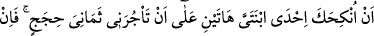

MÛSÂ,
MEDYEN SUYUNA
VARINCA
23. Mûsâ, Medyen suyuna varınca, orada (hayvanlarını) sulayan bir çok insan
buldu. Onların gerisinde de, (hayvanlarını) engelleyen iki kadın gördü. Onlara:
Derdiniz nedir? dedi. Şöyle cevap verdiler: Çobanlar sulayıp çekilmeden biz
(onların içine sokulup hayvanlarımızı) sulamayız; babamız da çok yaşlıdır.
24. Bunun üzerine Mûsâ, onların yerine (davarlarını) sulayıverdi. Sonra gölgeye
çekildi ve: Rabbim! Doğrusu bana indireceğin her hayra (lütfuna) muhtacım, dedi.
25. Derken, o iki kadından biri utana utana yürüyerek ona geldi: Babam, dedi,
bizim yerimize (hayvanları) sulamanın karşılığını ödemek için seni çağırıyor. Mûsâ,
ona (Hz. Şuayb’a) gelip başından geçeni anlatınca o: Korkma, o zalim kavimden
kurtuldun, dedi.
26. (Şuayb’ın) iki kızından biri: Babacığım! Onu ücretle (çoban) tut. Çünkü
ücretle istihdam edeceğin en iyi kimse, güçlü ve güvenilir olandır, dedi.
27. (Şuayb) dedi ki: Bana sekiz yıl çalışmana karşılık şu iki kızımdan birini sana
nikâhlamak istiyorum. Eğer on yıla tamamlarsan artık o kendinden; yoksa sana